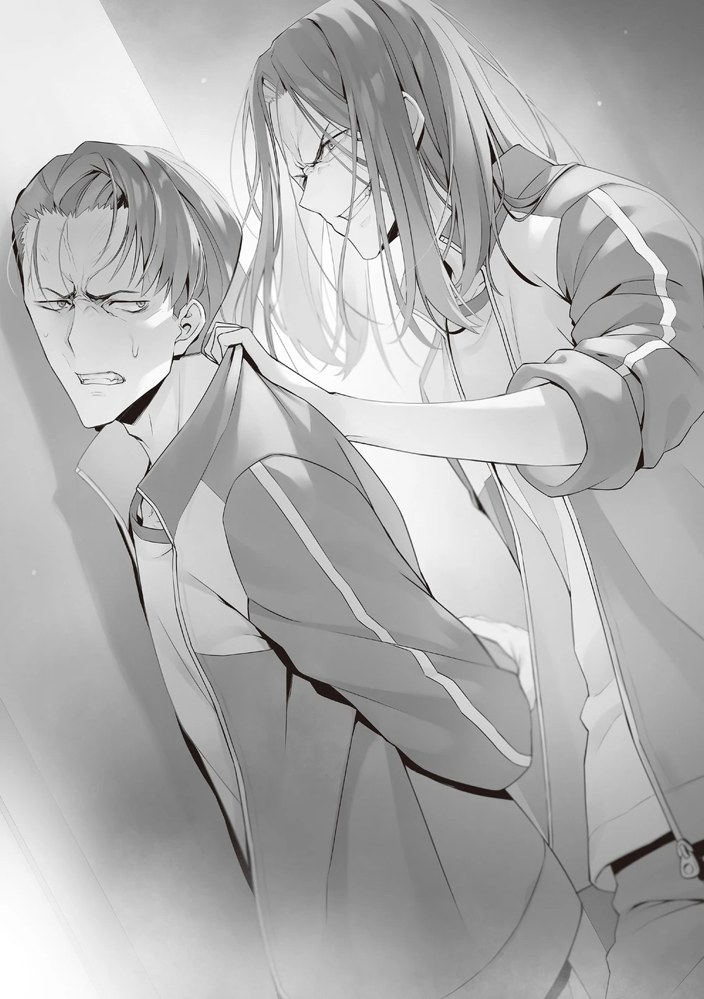

Akşam yemeğinden sonra çoğu öğrenci ya odalarında ya da banyoda dinleniyordu.
Tokitō, Ishizaki’den telefon geldiğinde sessizce odadan ayrıldı.
En sorunlu birinci sınıf öğrencisi olan Hōsen Kazuomi Tokitō’nun grubundaydı.
Ancak Tokitō, Hōsen’in varlığını bir sorun olarak görmüyor, hatta onun kibirli tavırlarını eleştiriyordu.
Ne dövüşte, ne zekada, ne de konuşmada yetenekli denecek kadar iyi değildi.
Tokitō’nun Hōsen’e dayanabilmesinin tek nedeni, Ryuen’in liderliği altında geçirdiği iki yıllık tecrübesiydi.
Kesinlikle o tecrübe sayesinde ayakta kalabiliyordu.
Hedefledikleri yer, deneysel derslerin toplandığı bölge çoktan terk edilmiş ve sessizdi.
Ishizaki’nin onu çağırdığı yer çömlekçilik sınıfının önündeydi.
Koridordaki camdan içeri baktığında, öğrenci yapımı eserlerin sıralandığını gördü.
Burada yapılan çömlekler ve cam işçiliği gibi ürünler, pişirildikten sonra isterseniz evinize gönderilebiliyordu.
Buna, Tokitō’nun sabahki oyunda katıldığı “boyama” etkinliğindeki çalışması da dahildi.
(Ç.N: Kilin kuruyup sertleşmesi için yüksek ısıya maruz kalması gerekir. Bu işleme “pişirme/firing” denir.)
Telefonunu cebinden çıkarıp aramaya niyetlenmişti ki, o sırada bir ses duydu.
“…Çağırıyorsun ama ortada yoksun.”
“Hey, beklettiğim için kusura bakma.”
“Ne istiyorsun, Ishizaki?”
Tokitō, ağır adımlarla yaklaşan Ishizaki’ye seslendi ama Ishizaki soruya cevap vermeden yanına geldi.
“Ne istediğimi bilmiyor musun?”
“Nereden bileyim… Mesajında net bir şey yazmamışsın ki.”
Aldığı mesaj yalnızca aciliyet bildiriyor, “Çabuk gel.” diyordu.
“Eh, aslında bilmemen normal. Doğrusunu söylemek gerekirse, ben bile ne istediğimi bilmiyorum.”
Kendisini çağıran Ishizaki’nin bile ne yapacağını bilmemesi garipti.
“Bilmiyor musun? Hiç anlamıyorum gerçekten—”
Tokitō memnuniyetsizliğini dile getirmek üzereyken, sırtında güçlü bir baskı hissetti.
Hemen ardından, sertçe duvara itildiğini fark etti.
“Hey. Ne halt etmeye çalışıyorsun sen!?”
Şeytan, kulağına gülerek bir şeyler fısıldadı.
“Ryūen…!? Ne demek istiyorsun? Ne… ne yapıyorsun!?”
Şaşırmıştı ama tepkisini minimumda tutmayı başararak bakışlarını geriye çevirdi.
“Biraz daha disipline ihtiyacın olduğunu düşündüm, o yüzden sürpriz bir ziyaret yaptım.”
Güçlü bir şekilde bastırıldığından Tokitō kaçamıyordu.
Kısa süreliğine kurtulsa bile, yakında duran Ishizaki’nin yardıma koşacağını biliordu.
“Ben… anlamıyorum…”
Kolu sınırına kadar sıkılmış, acı sırtına kadar yayılmıştı.
“Gerçekten mi anlamıyorsun?”
Aslında hatırladığı bir şey vardı ama söyleyemedi, bunun yerine rol yapıp aptalı oynadı.
“Ben hiçbir şey yapmadım…”
“Öyle mi? Adamlarımdan seninle ilgili bir rapor aldım.”
“N-ne!? N-nasıl yani!? Neden bahsediyorsun sen!?”
Anlamadığını savunsa da, kalbi göğsünde kaygıyla deli gibi çarpıyordu.
Hissettiği şeyin onunla alakası olmamasını umuyordu, ama o umut anında yıkıldı.
“Eğitim kampına geldiğimizden beri Sakayanagi ile yakınlaşmaya çalıştığına dair dört rapor aldım.”
Sakayanagi’nin adı geçince, Tokitō aptalı oynamaktan vazgeçti.
“Onunla tesadüfen karşılaştım ve sadece konuştuk. Bunun neresi yanlış, anlamıyorum…!”
“Mümkün olabilir, ama ne yazık ki buna inanmıyorum.”
Onların konuşma sıklığı düşünüldüğünde, aynı grupta bile olmayan insanlar için bunun tesadüf olduğu yalanı kolayca görülebiliyordu.
“Ve bunun yanlış olduğunu bilmiyor musun? Ne komik bir hikâye.”
“Uh…”
Tokitō bakışlarını kaçırdı, rolünün açığa çıktığını biliyordu.
Ryūen, yüzünü yaklaştırırken göz teması kurmaya çalışarak onu takip etti.
“O düşüşte olan biri. Yakında sınavlarda elenecek. O yüzden sana rastgele karışmamanı söyledim, değil mi!?”
Ryūen özellikle Kondō ve Jima’yı otobüste uyarmıştı, çünkü onlar Sakayanagi ile aynı gruptaydılar.
Fakat bu uyarıyı sessiz otobüste Tokitō’nun duyması mümkün değildi.

“Yani sıradan bir sohbet… müdahale gerektirir mi sence?”
“Gerektirmez. Ve bunu sana daha önce de söyledim, değil mi? Ya Sakayanagi’yi tamamen görmezden geleceksin ya da mümkünse psikolojik olarak yıpratıp köşeye sıkıştıracaksın. Sen bunu şaka gibi mi yorumladın, Ishizaki?”
“Kesinlikle hayır!”
“Bu doğru, öyle değil mi? Sen Ishizaki’den daha akıllısın, çoktan anlamış olmalıydın.”
Gerçekte ise Tokitō tam tersini yapmıştı.
Raporlara göre sadece basit sohbetler değil, sık sık Sakayanagi’yle ilgileniyor, ona destek oluyordu.
“Hatta sen konuşurken gördüğün Isoyama’ya sessiz kalmasını söyledin, değil mi? Kimin emrine uyacağını bilmen gerekirdi: senin mi, benim mi?”
Yakında duran Ishizaki, söylenenlere defalarca sertçe başını sallayarak onay verdi.
“Dersini al Tokitō. Bu senin için daha kolay olacak. Hatta Ryūen-san bile seni affedecek.”
Eğer burada itaat etseydi, en azından baskıdan kurtulacaktı.
Ama Tokitō dudağını sertçe ısırdı, öfkeyle Ryūen’e dik dik bakarak kurtulmaya çalıştı.
“Ben… sadece…”
“Sadece ne?”
Artık saklayacak bir şey kalmamıştı, denemenin boş olduğunu bilerek sinirle kelimeler döküldü.
“Sadece Sakayanagi’yi teselli etmek istedim… Arkadaşı atıldığı için üzülüyordu…!”
“Hah. Sakayanagi’yi o kadar mı becermek istiyorsun?”
(Ç.N: Burada “teselli etmek” ifadesi Ryūen tarafından özellikle iki anlamlı şekilde yorumlanıyor. Orijinalde “fuck” yanlış çeviri değil, Ryūen’in kasıtlı bir oyunudur.)
“Hayır, öyle değil! Asla öyle bir şey değil!”
“Öyle mi? Bana hiç öyle gelmiyor.”
Ryūen kahkaha atarak devam etti:
“O zaman sana saldırman için bir ortam hazırlayayım mı? O soğukkanlı kız bile onu becerirsen fiziksel ve zihinsel olarak paramparça olur.”
Bu şeytani fısıltı Tokitō’nun öfkesini zirveye taşıdı.
Bir anda gücünü artırarak Ryūen’in baskısından kurtuldu.
“Benimle dalga geçme!”
Öfke patlamasıyla iki eliyle Ryūen’i yakalamaya çalıştı, fakat karşısında kahkaha atan Ryūen gözden bir anda kayboldu.
Alttan gelen ani bir tekmeyle yere serildi ve durduruldu.
“Hehehe, ciddiye alma. Ama istersen Sakayanagi’yi köşeye sıkıştırma rolünü sana verebilirim.”
“…Sana itaat etmeyeceğim… Bunu asla kabul etmeyeceğim…!”
Tehdide boyun eğmeyi reddetti ve Sakayanagi’ye yönelik muamelesine devam etme niyetini ortaya koymuş gibiydi.
Ruhunun ve kararlılığının gerçek olduğunu anlayan Ryūen, sert muamelesini sürdürdü.
“O zaman seni bedeninle mi anlamanı sağlayım?”
“Benimle dalga geçme, yapamazsın—”
Tokitō cümlesini bitiremeden önce Ryūen sol yumruğunu sıktı ve tereddüt etmeden Tokitō’nun karnına sapladı.
“Uhh…!”
Alışılmadık derecede keskin acıyla Tokitō acı dolu bir çığlık attı, dizleri üstüne çöktü.
Ama Ryūen onu sıkıca tuttuğundan yere yığılmasına izin vermedi.
“Burada okulun güvenlik kameraları yok. Değil mi, Ishizaki?”
“Evet! Bu bölgedeki hiçbir yerde kamera olmadığını teyit ettim!”
“Böyle bir adama itaat ettiğini düşünmek…!”
Tokitō, Ishizaki’nin tavrından rahatsız olarak kınadı.
“Ne demek istediğini anlıyorum, Tokitō. Sınıfın kontrolünü elime alıp cirit atıyordum, ama bir ara o mevkiyi bıraktım. O zaman iyi hissetmişsindir, değil mi?”
“Evet… Çıplak kralı kovduğumu hissettim…!”
(Ç.N.: Buradaki “çıplak kral” ifadesi “Yeni Giysileriyle Kral” masalındaki “çıplak kral” anlamına gelir; gücü elinde bulunduran birinin kusurlarını görmezden gelip gerçekleri söylemeye çekinen çevresindekiler yüzünden kendi halinden habersiz olması anlamında kullanılır.)
Tokitō’nun acımasız yorumu üzerine Ishizaki elini alnına koydu, sanki ‘Aman Tanrım’ der gibi.
Saygısızlık etseydin ortadan kaldırılırdın.
Bu bir kuraldı ve vücuduna kazınmıştı.
Buna rağmen Ryūen, daha fazla fiziksel acı vermek yerine eğlenir bir ifadeyle gözlerini açtı.
“Bu çok üzücü. Sonuçta eski mevkimi geri aldım ve istediğimi yapıyorum. Can sıkıcı olmalı.”
Aşağıdakilerin onu nasıl gördüğünü düşünmeye gerek duymadan kendine objektif bakıyordu.
Yine de Ryūen tavrından vazgeçmedi.
“Benden nefret ediyor musun?”
“Senden… ölümüne nefret ediyorum…”
“O halde kendini tutma. Bana zorla karşı koyabileceğini göster. Ne kaçacağım ne de saklanacağım. Ama yumruğunu kaldırırsan, seni her şekilde köşeye sıkıştırırım. Buradan çıkışın tek yolun okuldan atılmak olur. Buna hazırlıklı ol.”
Sadece Tokitō değil, herkes Ryūen’in yenilmekten korkmadığını çok iyi biliordu.
İşte bu yüzden ona karşı çıkmak için mutlak bir kararlılığa sahip olmak gerekiyordu.
“Anladın mı? Bu sana tavsiyem. Eğer anladıysan, Sakayanagi’ye bir daha asla yardım etme.”
Sıkışmış kolundaki acıya rağmen, Ryūen hâlâ onun geri dönme şansı olduğunu nazikçe söylüyordu.
“Peki ya… senin emrine… karşı gelirsem…?”
Sorulmasına bile gerek olmayan bu söz karşısında Ryūen memnuniyetle gülümsedi.
“Seni ezerim. Bu kadar basit.”
Yumruğunu kaldırmasına gerek bile yoktu. Ona itaat etmeyenleri acımasızca ezerdi.
“…!”
Tehdide rağmen Tokitō bakışlarını kaybetmeden isyankâr ruhunu yansıtarak Ryūen’e dik dik bakmaya devam etti.
“Güzel, Tokitō. İşte bu yönünü ilginç buluyorum. Bakalım gözlerindeki o bakışı ne kadar sürdürebileceksin.”
Kaçınılmaz bu durumdayken kolundaki acıya rağmen hemen kararını verdi.
“İçin rahat olsun. Ishizaki’nin sana dokunmasına izin vermeyeceğim.”
Tokitō’nun nefeslenmesine fırsat tanıyan, ilk hamleyi ona bırakan Ryūen bir adım geri çekildi ve kollarını açtı.
“Yapacağım… Senin gibi birine… asla yenilmeyeceğim…”
Kendi kendini telkin ederek yumruklarını ovuşturdu.
Aralarındaki dövüş gücü farkı açıktı.
Ama en azından bir kere Ryūen’in yüzüne yumruk atmaya kararlıydı.
Karşılığını göze aldıysa, bunu başarabileceğine inanıyordu.
Tam kararını verecekken, beklenmedik biri ortaya çıktı.
“Paisen’i aramaya gelmiştim. Ona bir iş verdim, geri dönmedi. Ama bakın ne buldum.”
(Ç.N.: “Paisen”, “senpai” kelimesinin hecelerinin yer değiştirmesiyle türetilmiş, saygısızca kullanılan bir argo hitaptır.)
Sahneye boynunu ovarken çıkan kişi, 1-D sınıfından Hōsen’di.
Ortaokuldan beri Ryūen ile köklü bir ilişkisi vardı.
“Neler oluyor, Tokitō-paisen?”
“…Yok bir şey…”
Aynı grupta olsalarda, Tokitō, birinci sınıf kōhaisine ağlayamazdı.
Yine de yumruğunu sıkarak Ryūen’le yüzleşirken ortada hiçbir şey yok demesi mantıksızdı.
Bir senpai olarak kōhaisine karşı duygularını göstermeyecek kadar gururluydu, ama bu aynı zamanda sınıf içi bir meseleydi.
Bu yüzden böyle bir şey için grubuna bela olmak istemiyordu.
“Defol. Yolumun üzerinde duruyorsun.”
Ryūen, ortamın bozacağını söyleyip elini hafifçe sallayarak onu kovmaya çalıştı.
“Eğer gerçekten bir şey yoksa, hemen gidip bize birinci sınıflara bi’ içecek al.”
Hōsen, Ryūen’i görmezden gelerek Tokitō’ya sert bir tonla konuştu.
“Ha? İçecek mi? Ne diyorsun yahu…!”
İlk hamleyi yapma hakkı kendisine verilmiş olan Tokitō şaşkına döndü ve fırsatı kaçırdı. Ryūen’in kolu yeniden uzandı.
Sol kolunu Tokitō’nun boğazına bastırıp onu duvara vurdu.
“Ugh…!?”
Tokitō, acısını tam sesle haykıramadan inleyerek bir çığlık attı.
“Geri çekil, Hōsen. Şu an seninle uğraşamam.”
“Beni ilgilendirmez. Ben Tokitō-paisen’le konuşuyorum. Sen yabancısın, o yüzden geri çekil. Yoksa ölmek mi istiyorsun?”
“…Ha! Onu bulmak için mi buraya mı geldin? Beni kandırma.”
Ryūen, Hōsen’in arkasında birilerinin olabileceğinden şüphelendi.
“Hayır, Hōsen’in bununla alakası yok… Sadece Ishizaki’ye beni buraya çağırdıklarını söyledim.”
“Ne? Hey Ishizaki, ne tür bir mesaj attın?”
“Ha!? Sadece normal bir mesajdı! Hemen deneysel derslik alanına gelmesini söyledim, hepsi bu!”
Ishizaki, yurttan ayrılırken insanları nereye çağırdığını söylemenin olası risklerini hesaba katmayan dikkatsiz bir hata yapmıştı.
Ryūen’in burnunun kenarından hafifçe gülümsemesini görünce, Ishizaki hatasını anladı.
“Üzgünüm, Ryūen-san! Hey Hōsen, geri çekil!”
Ishizaki, Hōsen’in güçlü sağ kolunu tutarak durumu düzeltmeye çalıştı ama kolayca üzerinden savurdu.
“Bana dokunma. Seni öldürürüm.”
“Ah…!”
Ishizaki, Hōsen’in Ryūen’den tamamen farklı, yoğun tehditkâr tavrına irkilerek geriledi.
Hōsen ayrılmak yerine Ryūen ile Tokitō’nun olduğu yere doğru yürümeye başladı.
“Görünüşe göre oynamak istiyorsun. Albert, bu işi sen hallet.”
Hiç ses çıkarmadan Albert, Hōsen’in önünde belirdi ve yolunu kesti.
“Her zamanki gibi, dayanaklarına güvenmeden hiçbir şey yapamıyorsun.”
“Dövüşmek aptalca tek başına dalmak değildir.”
Hōsen esnedi, sonra hemen yere balgam tükürdü.
“Seni her zaman dövüşürken görmek istemişimdir, Albert. Masada tenis oynamaktan daha eğlenceli olabilir.”
Kaotik ve bir eğitim kampına hiç uygun olmayan ortamda, Ryūen bakışlarını Hōsen’den çekip doğrudan Tokitō’ya çevirdi.
“Artık sıkıntı yaratan kişi gittiğine göre, dövüşümüze devam edelim—”
“Affedersiniz, ama elinizi çekebilir misiniz, Ryūen-senpai?”
“Hm?”
Daha fazla ceza vermek üzere olan Ryūen’i durduran kişi, 1-C sınıfından Utomiya Riku’ydu.
“Ne? Utomiya, sen de mi geldin?”
“N-Ne oluyor burada?”
Sadece şaşıran kişi Ishizaki’ydi.
“Hı? Ah evet, sen de Tokitō-senpai’yi dinliyordun.”
“Senpai’ye el kaldırıp kaldırmayacağını görmek için geldim.”
“Kör müsün? El kaldıracağıma dair bir ihtimal yok.”
Hōsen’e küçümseyerek bakmasına rağmen Utomiya, Tokitō ve Ryūen’e doğru yürüdü.
Ishizaki onu durdurmaya çalıştı ama Hōsen’in uzun kolu onu formasının kolundan tutarak geri çekti.
Hiç kimse onu durduramayınca, Utomiya korkusuzca mesafeyi kapattı ve hâlâ Tokitō’yu bastıran Ryūen’in üst kolunu tuttu.
“Tokitō-senpai grubumun bir üyesi. Burada yaralanırsa, yarın etkisi olabilir. Sınıf içi bir mesele ne kadar küçük olursa olsun, göz ardı edemem.”
Açıklama yapmaya gerek duymadan, Utomiya gergin atmosferi hissederek duruma müdahale etti.
“Umurumda değil. Bu meseleye karışma.”
“…Sorun, bu meselede pozisyonunu kullanıp diğerlerini tehdit eden adamda işte…”
Utomiya geri adım atmadan öfkesini artırarak Ryūen’e karşı çıktı.
“Ne? O zaman neden beni durdurmayı denemiyorsun?”
“Buna hazır mısın? Senpai olarak arkadaşlarının önünde rezil olursun.”
Nezaket dilini kullanmayı bırakan Utomiya, hızla dövüşe hazırlanıyordu.
“Hey, hey, hey, hey! Ryūen ile tek başına başlama!”
Duruma karşı çıkan Hōsen, koridor boyunca yüksek sesle bağırdı.
“Sus Hōsen. Sana ihtiyacım yok. Gereksiz sorun çıkarma.”
“Hı? Sen kimsin de böyle konuşuyorsun?”
“Büyük bir gorille konuşsam bile, sözlerim ona ulaşmaz.”
Utomiya, Tokitō’yu desteklemeye gelmiş gibi görünse de, Hōsen’e de Ryūen’e davrandığı şekilde davranıyordu.
“Pekala o zaman. Albert-paisen’den önce seninle başlarım.”
“Kaç kere söylemem lazım? Ne zaman istersen seni alırım.”
Birinci sınıfların tartışmaya başlamasını gören Ryūen, alışılbadık bu manzaraya dayanamayarak gülmeye başladı.
“Hehehe. Bu okul bayağı gürültülü oluyor. Girdiğimde sıkıcı, ciddi insanlarla dolu sandım, ama şimdi oldukça çok atılgan yüzler ortaya çıkıyor. Bundan memnuniyet duyarım.”
Hōsen ve Utomiya da işin içine katılınca, Ryūen Tokitō’ya olan ilgisini kaybetti.
Bakışlarını, oturmuş kısık sesle öksüren Tokitō’dan ayırdı.
“İntikam maçını burada alacağım, Hōsen. Bu sırada siz birinci sınıfları tek başıma alırım.”
Tokitō artık umursamayan Ryūen, durumu böyle ifade etti.
“Güzel. Bu kamp eğlenceli hale geliyor. Öncelikle, kaybol!”
Hōsen’in güçlü yumruğu Albert’ın elinde yakalandı ve Albert’ın dudakları sıkıca kapalıydı.
“Oh, dayandın! İşte olması gerektiği gibi!”
Durum, şiddetlenmeden çözülmeyecek gibi görünüyordu ama Hōsen’in yüksek sesi her şeyi aniden bitirdi.
“Neler oluyor? Siz ne yapıyorsunuz?”
Kargaşayı duyan üçüncü sınıflar öncülüğünde birkaç erkek ve kız deneyim sınıfı alanına gelmeye başladı.
“Tsk. Eğlenceli hale geliyordu.”
“Lanet olsun.”
Hōsen, bağıran kişi olduğunu fark etmeden, Ryūen gibi dili tıklattı.
“Bu bir kavga değil, değil mi?”
“Hayır, değil. Sadece hafif bir sohbet ediyorduk.”
Utomiya hemen üçüncü sınıfların önünde durdu ve her şeyi bu açıklamayla örtbas etti.
Durumun ne kadar kötüleştiğini gören Ryūen ve Hōsen, birbirlerine bakarak doğal bir şekilde arkasını döndü ve mesafeyi korudu.
“Hadi Albert, sen de gel, Ishizaki. Sana daha sonra çok şey öğreteceğim.”
“E-Evet! Teşekkür ederim!!”
Üçü, kendilerine kızgın bakışlar atan iki birinci sınıf öğrenciyi ve Tokitō’yu görmezden gelerek olay yerinden ayrıldı.
Ayrılırken Albert, Hōsen’in geniş sırtına bakıp mırıldandı.
“Dövüş yeteneği Ayanokōji’ye eşit ya da daha yüksek olabilir. Gerçekten muazzam bir birinci sınıf.”
Aldığı yumruğun ağırlığı, elindeki uyuşmanın hissettirdiği gibi, Ayanokōji’ninki kadar yoğundu.
Bu, onunla savaşmanın iyi bir fikir olmadığını ima eden bir ifadeydi.
Ama Ryūen, Albert’ın sözlerine gülmeden edemedi.
“Beni güldürme. Sadece basit güç açısından belki rekabet edebilir, ama genel güçlerini karşılaştırırsan, kıyaslanamaz. Ayanokōji’nin gücünün kaynağı o kadar basit değil.”
Albert, yumruğunu açıp avcuna bakınca çatı katındaki olayı hatırladı ve katıldı.
Kalbi hatırlıyordu. O, sıradan ağırlık standartlarını aşan bir rakipti.
“Ama Tokitō, Sakayanagi’ye bayağı düşkün gibiydi… Bir şey yapmamız gerekmiyor mu? Mesela Hashimoto’nun ihaneti gibi…”
Ryūen, Ishizaki’nin endişesini onun sözlere dökmesine gerek kalmadan önceden tahmin etmişti.
“Tokitō o kadar aptal değil. Bunu böyle bırakalım. Zaten yeterince onu sıkıştırdık.”
“…Evet. Öyle diyorsan, Ryūen-san.”
“Şimdi A sınıfına odaklanacağız. Şu anda en baş belası Kitō, Sakayanagi değil. Her an çılgına dönebilir.”
“Sanırsın savaş.”
“Savaş, hm? Haklısın, buradan sonrası için her şey olabilir.”
Yıl sonu sınavları yakında başlayacaktı.
Karışıklığın olacağını anlayan Ryūen, geleceğe hazırlanmaya başladı.